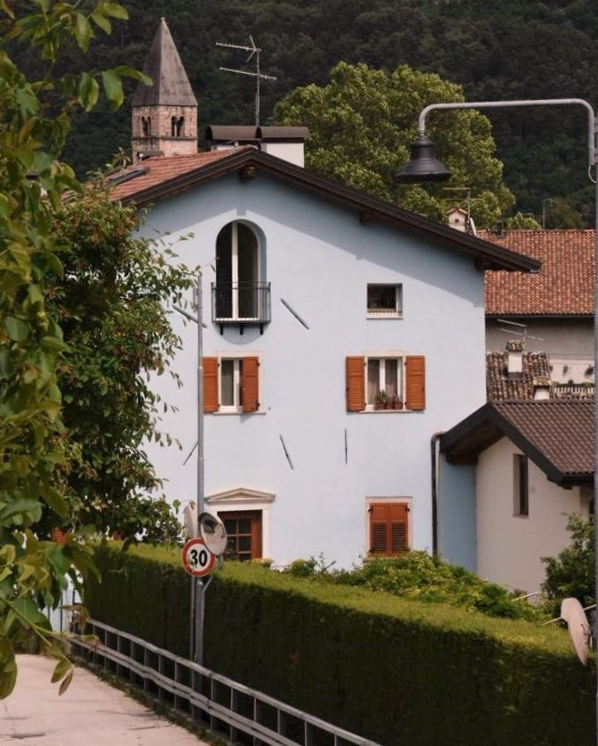

Siamo Corrado ed Eugenia e presto saremo pronti ad accogliervi al Von Cadenberg.
Noi stessi abbiamo vissuto qui quando la casa ancora doveva essere ristrutturata e buona parte di Cadine era composta da vecchi casolari.
Da buoni “trentini doc” quali siamo amiamo la montagna e la tranquillità e Cadine è sempre stato un luogo dove poterci rilassare ed allontanarci dallo stress quotidiano della città.
La nostra casa azzurra è sempre stata la base, da dove partire per delle spedizioni giornaliere sulle verdi montagne che circondano il paesino.
Le possibilità sono infinite: potete partire per divertenti gite in famiglia (noi stessi abbiamo vissuto giornate indimenticabili con i nostri ragazzi), trascorrere giornate al lago, dedicarvi a visite a sfondo culturale (musei, siti storici, l'osservatorio astronomico "Terrazza delle stelle") o godervi semplici giornate rilassanti nel giardino del Von Cadenberg.
Non siamo sicuramente gli unici ad apprezzare la montagna e le sue bellezze: Per questo motivo abbiamo deciso di condividere con voi la nostra inconfondibile casa, in modo che anche voi abbiate un confortevole appoggio per esplorare e scoprire questi bellissimi luoghi!
